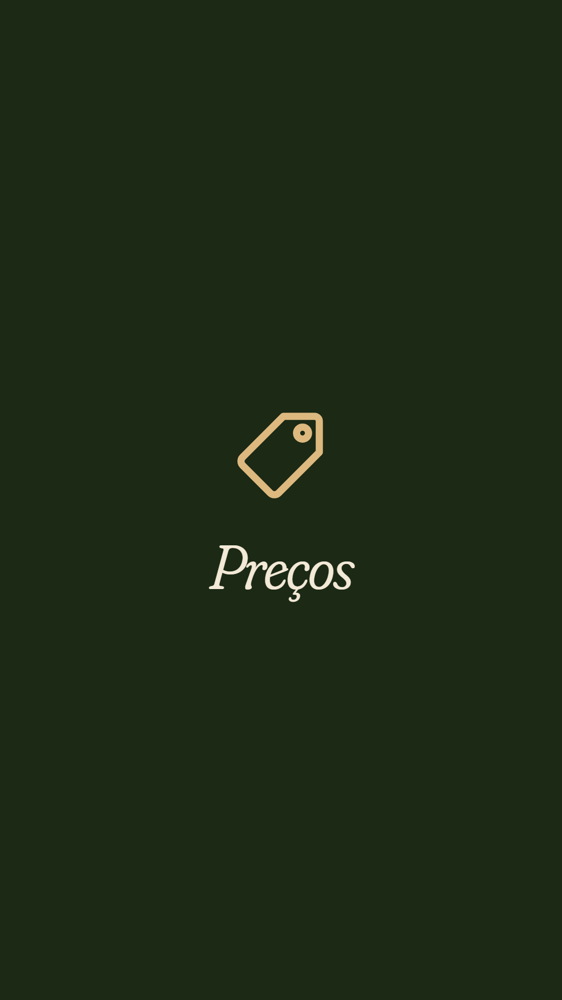
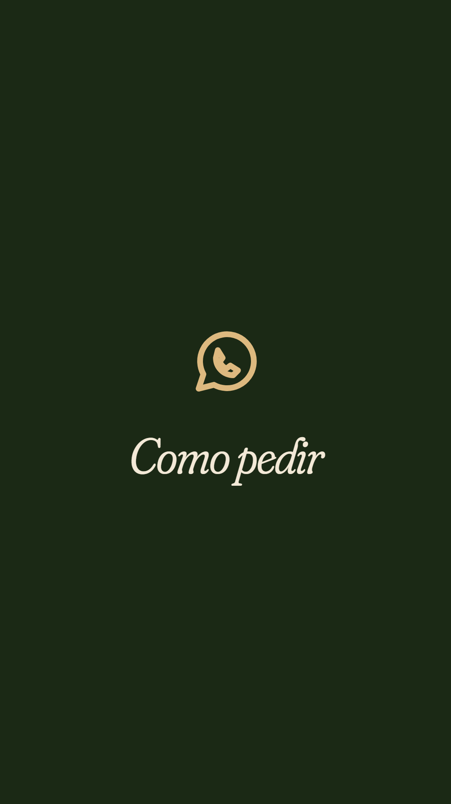
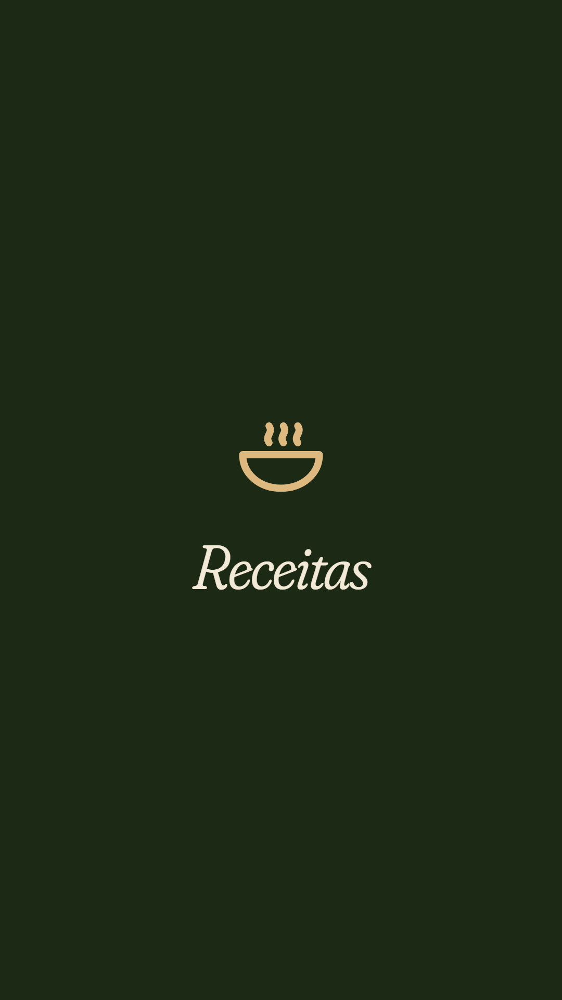
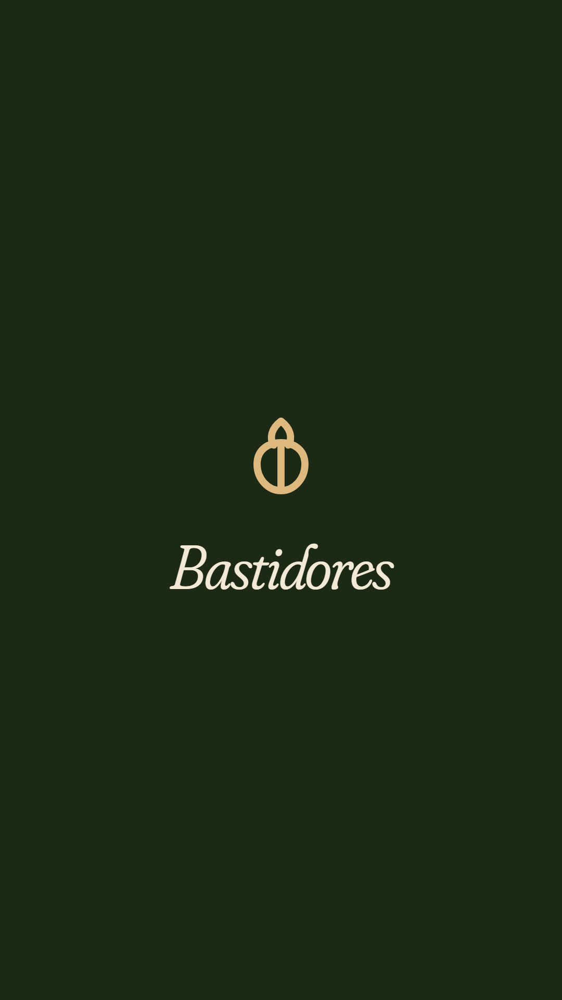

Seu Instagram novo
Do Stúdio para a Alho e Afeto, com calma, um passo de cada vez. Leva uns 20 minutos.
Como usar esta página: faça um passo, toque em "Feito ✓" e desça para o próximo. Os desenhos mostram a tela do Instagram. O círculo vermelho é onde você toca.
Sua tela pode ter cores um pouco diferentes do desenho. Procure pelo nome escrito.
Travou? Tira um print da tela e manda para o Pedro.
Antes de começar
Baixe a foto nova
A foto do perfil e as capas dos destaques já estão prontas. Baixe tudo agora, assim fica no seu celular.
⬇ Baixar a foto do perfil

Capa "Preços"

Capa "Como pedir"

Capa "Receitas"

Capa "Bastidores"No iPhone, a imagem pode abrir em vez de baixar. Aí é só segurar o dedo em cima dela e tocar em "Salvar na Fotos" (ou "Adicionar a Fotos").
No Android, ela vai para a pasta Downloads e aparece na galeria.
O Instagram pode pedir um código de segurança no meio do caminho. Ele chega no seu e-mail ou por SMS. É normal.
Parte 1 · Guardar as fotos do salão
As fotos antigas vão para o arquivo
Nada é apagado. Arquivar só tira do perfil. Elas ficam guardadas só para você e podem voltar quando quiser.
Abra o Instagram e toque na sua foto, lá embaixo à direita
Vai abrir o seu perfil, com o nome studio.adriane_schlinke em cima.
Toque nos três risquinhos, no canto de cima à direita
Salão de beleza
Toque em "Sua atividade"
Toque em "Fotos e vídeos" e depois em "Publicações"
Na tela seguinte:
Toque em "Selecionar", marque as fotos e toque em "Arquivar"
Toque em cada foto para marcar ✓
Cuidado: toque em "Arquivar", nunca em "Excluir". Excluir apaga para sempre.
Dá para marcar várias de uma vez. Se forem muitas, faça em partes: marca umas 20, arquiva, e repete até não sobrar nenhuma do salão.
Parte 2 · Tirar os destaques do salão
As bolinhas de cima do perfil
São os destaques: Cutilagem, Gel nas unhas, Maquiagem, Banho de gel, Sobrancelhas, Manicure e Cílios. Vamos tirar um por um. Os stories continuam guardados no seu arquivo.
No perfil, segure o dedo em cima de um destaque e toque em "Excluir destaque"
Confirme tocando em "Excluir". Repita nos 7 destaques.
Parte 3 · O perfil novo
Nome, foto, @ e bio
No seu perfil, toque em "Editar perfil"
Trocar a foto: toque em "Editar foto ou avatar"
Toque em "Nova foto de perfil", escolha a foto que você baixou (a logo da Alho e Afeto), deixe a logo no meio do círculo e toque em "Concluir" (ou na setinha → no canto de cima).
Trocar o nome: toque em "Nome", apague e cole o novo
Alho e Afeto · Alho triturado
Ajude as pessoas a encontrar sua conta usando o nome pelo qual você é conhecida.
Para colar: segure o dedo dentro do campo e toque em "Colar".
O Instagram deixa trocar o nome só 2 vezes em 14 dias. Confira se ficou certinho antes de tocar no ✓.
Trocar o @: toque em "Nome de usuário", apague e cole o novo
alhoeafeto.rj
Você poderá voltar para studio.adriane_schlinke por 14 dias.
Espere aparecer o ✓ verde no campo. Ele quer dizer que o nome está livre. Aí toque no ✓ lá em cima.
Fique tranquila: suas seguidoras continuam todas aí. Só muda o endereço do perfil.
Se aparecer "não está disponível", use este: alho.e.afeto (com os pontinhos).
Trocar a bio: toque em "Bio", apague tudo e cole o texto novo
Alho roxo triturado, pronto pra usar 🧄 Pote 250 g R$ 13 · 500 g R$ 20 Feito com carinho no Rio Encomende pelo WhatsApp 👇
Dentro da bio, segure o dedo no texto, toque em "Selecionar tudo", apague, depois segure de novo e toque em "Colar". Toque no ✓.
Trocar o link: tire o Linktree e coloque o do WhatsApp
Na tela do link, toque em Remover link. Depois, de volta aqui:
No campo "URL", cole este link:
https://wa.me/5521976765504?text=Oi!%20Quero%20encomendar%20alho%20triturado
No campo "Título", cole:
Encomendar pelo WhatsApp
Toque em "Concluir". Agora quem tocar no link do seu perfil já cai na sua conversa do WhatsApp, com a mensagem escrita.
Trocar a categoria: de "Salão de beleza" para alimentos
Desça a tela até o fim ⬇
Na busca, escreva alimento e escolha a opção mais parecida, como "Empresa de alimentos e bebidas". Deixe ligado "Exibir categoria no perfil" e toque em "Concluir".
Tirar o endereço da sua casa e colocar o WhatsApp
Em "Editar perfil", toque em "Opções de contato" (pode estar escrito "Botões de contato").
Apague o endereço comercial. Ele mostra o endereço da sua casa para qualquer pessoa, e agora a venda é por encomenda. Toque no ✓.
Se não aparecer o campo do WhatsApp, tudo bem: o link da bio (passo 12) já leva para o seu WhatsApp.
Parte 4 · Destaques novos
As bolinhas novas do perfil
Vamos criar 4 destaques: Preços, Como pedir, Receitas e Bastidores. O Pedro vai te mandar as artes para postar.
Poste a arte de preços nos stories e toque em "Destacar"
Seu story com a arte de preços
Depois de postar, abra o seu story (toque na sua foto). Embaixo aparece "Destacar". Toque, depois em "Novo", escreva Preços e toque em "Adicionar".
Coloque a capa: segure o destaque e toque em "Editar destaque"
Toque em "Editar capa", depois no quadradinho de galeria 🖼, e escolha a capa "Preços" que você baixou. Ajuste para ficar no meio e toque em "Concluir".
Repita os passos 15 e 16 para Como pedir, Receitas e Bastidores.
Parte 5 · Contar a novidade
Avise suas clientes
Poste um story contando a mudança
Suas seguidoras conhecem o Stúdio. Um recado seu evita estranhamento. Pode usar este texto:
O Stúdio virou Alho e Afeto! 🧄 Agora eu cuido do tempero da sua casa: alho roxo triturado, pronto pra usar. Encomendas pelo WhatsApp do perfil.
Coloque o @ novo no status do WhatsApp
Meu Instagram mudou! Agora é @alhoeafeto.rj 🧄 instagram.com/alhoeafeto.rj
Se no passo 10 você usou alho.e.afeto, troque o @ no recado antes de postar.
Pronto
Seu perfil vai ficar assim
Empresa de alimentos e bebidas
Alho roxo triturado, pronto pra usar 🧄
Pote 250 g R$ 13 · 500 g R$ 20
Feito com carinho no Rio
Encomende pelo WhatsApp 👇
🔗 Encomendar pelo WhatsApp
Agora é só postar os vídeos e as artes que o Pedro mandou. Uma por dia, com calma. 💚